場所をつくり、
選べる仕組みをつくる。
What We Do会社や商品のよさは、知っている人の内側に留まりがちです。杜工舎は、その情報をWebで届く形に整え、必要としている人との間に入口をつくります。
ホームページデザイン
DESIGN仕事が伝わる、会社の一枚。
ご記入シートと写真をいただいてから、2週間ほどで制作いたします。
業種を選ぶ
御社に近いものをどれでも下の一覧から、御社に近い業種を押してください。その業種の5案が出ます。すぐ
好きなデザインを選ぶ
見本を押すと、実物が新しいタブで開きます淡・玄・雅・粋・理の5案から1つ。載せる項目はどれも同じ、選ぶのは見た目だけ。約10分
日本の美意識からとった五つの型です。飾りを削り、時代が変わっても古びないものだけを残しました。
 淡あわい雨に洗われた白と、雨脚。淡は、色や音がすこしだけ残っている状態を指します。言い切らないこと、すべてを見せないことを、日本は美しいとしてきました。雨上がりの空を一枚の紙にしました。飾りの罫は、一本も引いていません。実物を見る ↗
淡あわい雨に洗われた白と、雨脚。淡は、色や音がすこしだけ残っている状態を指します。言い切らないこと、すべてを見せないことを、日本は美しいとしてきました。雨上がりの空を一枚の紙にしました。飾りの罫は、一本も引いていません。実物を見る ↗ 玄げん写真を、闇に沈めて。玄は黒であり、奥が深くて容易には見えないものを指します。幽玄の玄、玄人の玄。見せないことで、かえって深く見せる。写真に、濃さの変わらない一枚の膜を掛けて、同じ闇に沈めました。実物を見る ↗
玄げん写真を、闇に沈めて。玄は黒であり、奥が深くて容易には見えないものを指します。幽玄の玄、玄人の玄。見せないことで、かえって深く見せる。写真に、濃さの変わらない一枚の膜を掛けて、同じ闇に沈めました。実物を見る ↗ 雅みやび灯のような墨に、金の細線。雅は、荒々しさを削いだあとに残る美しさの名です。声を張らず、急がず、細部にだけ心を配る。夜の座敷のしつらえを思って組みました。写真は紙に貼らず、金の細い枠に掛けています。実物を見る ↗
雅みやび灯のような墨に、金の細線。雅は、荒々しさを削いだあとに残る美しさの名です。声を張らず、急がず、細部にだけ心を配る。夜の座敷のしつらえを思って組みました。写真は紙に貼らず、金の細い枠に掛けています。実物を見る ↗ 粋いき藍の、細い縦線だけ。粋は、飾りを削って、それでも残るもののことです。九鬼周造は、いきは横縞より縦縞を、太い縞より細い縞を選ぶと書きました。ですから、細い縦の線だけで組みました。何を足すかではなく、何を残すかで決めています。実物を見る ↗
粋いき藍の、細い縦線だけ。粋は、飾りを削って、それでも残るもののことです。九鬼周造は、いきは横縞より縦縞を、太い縞より細い縞を選ぶと書きました。ですから、細い縦の線だけで組みました。何を足すかではなく、何を残すかで決めています。実物を見る ↗ 理り一本の筋を、通す。理は、もともと玉（ぎょく）の筋目のことで、そこから物事の筋道を指すようになりました。縦に流れる言葉と、整えた余白。題字と社名を縦に組み、本文は横書きで読みやすく。掛軸を思わせる紙と表装が、仕事への姿勢を静かに伝えます。実物を見る ↗
理り一本の筋を、通す。理は、もともと玉（ぎょく）の筋目のことで、そこから物事の筋道を指すようになりました。縦に流れる言葉と、整えた余白。題字と社名を縦に組み、本文は横書きで読みやすく。掛軸を思わせる紙と表装が、仕事への姿勢を静かに伝えます。実物を見る ↗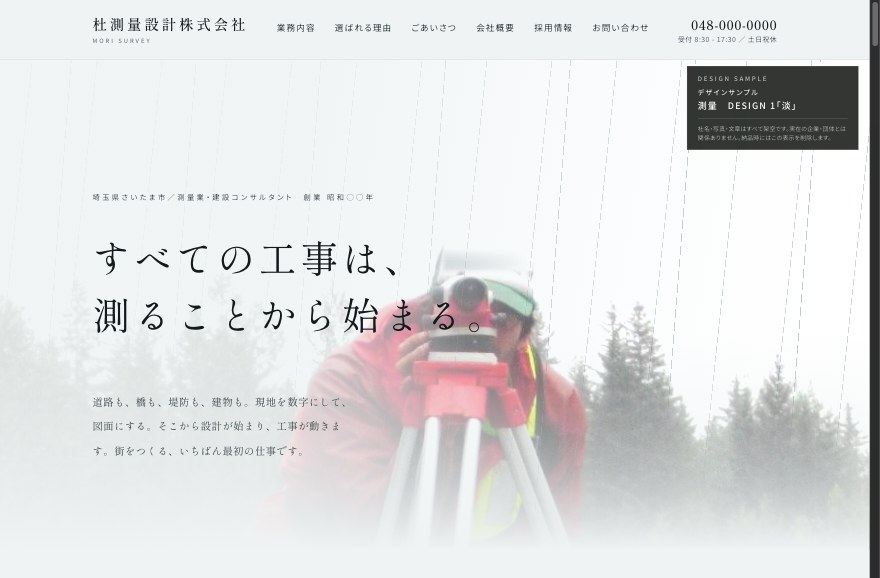
淡あわい雨に洗われた白と、雨脚。淡は、色や音がすこしだけ残っている状態を指します。言い切らないこと、すべてを見せないことを、日本は美しいとしてきました。雨上がりの空を一枚の紙にしました。飾りの罫は、一本も引いていません。実物を見る ↗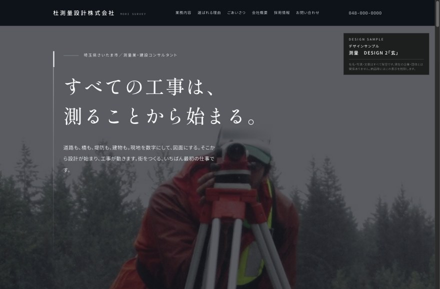
玄げん写真を、闇に沈めて。玄は黒であり、奥が深くて容易には見えないものを指します。幽玄の玄、玄人の玄。見せないことで、かえって深く見せる。写真に、濃さの変わらない一枚の膜を掛けて、同じ闇に沈めました。実物を見る ↗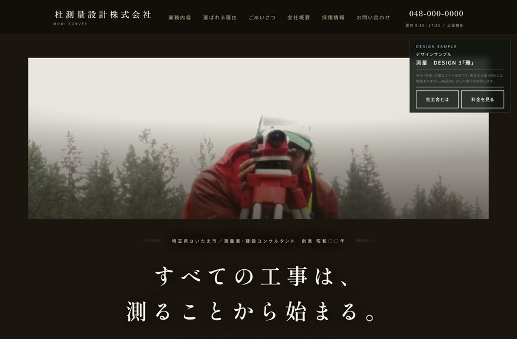
雅みやび灯のような墨に、金の細線。雅は、荒々しさを削いだあとに残る美しさの名です。声を張らず、急がず、細部にだけ心を配る。夜の座敷のしつらえを思って組みました。写真は紙に貼らず、金の細い枠に掛けています。実物を見る ↗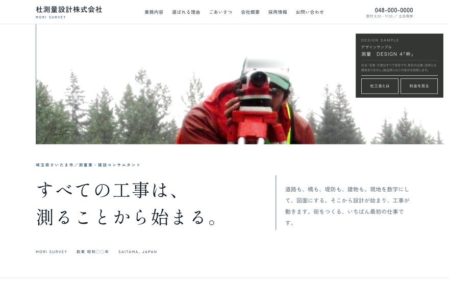
粋いき藍の、細い縦線だけ。粋は、飾りを削って、それでも残るもののことです。九鬼周造は、いきは横縞より縦縞を、太い縞より細い縞を選ぶと書きました。ですから、細い縦の線だけで組みました。何を足すかではなく、何を残すかで決めています。実物を見る ↗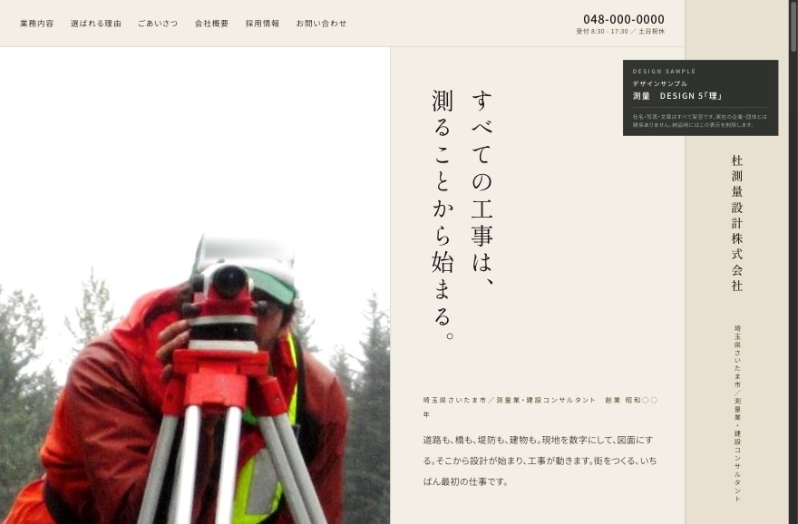
理り一本の筋を、通す。理は、もともと玉（ぎょく）の筋目のことで、そこから物事の筋道を指すようになりました。縦に流れる言葉と、整えた余白。題字と社名を縦に組み、本文は横書きで読みやすく。掛軸を思わせる紙と表装が、仕事への姿勢を静かに伝えます。実物を見る ↗ 淡あわい雨に洗われた白と、雨脚。淡は、色や音がすこしだけ残っている状態を指します。言い切らないこと、すべてを見せないことを、日本は美しいとしてきました。雨上がりの空を一枚の紙にしました。飾りの罫は、一本も引いていません。実物を見る ↗
淡あわい雨に洗われた白と、雨脚。淡は、色や音がすこしだけ残っている状態を指します。言い切らないこと、すべてを見せないことを、日本は美しいとしてきました。雨上がりの空を一枚の紙にしました。飾りの罫は、一本も引いていません。実物を見る ↗ 玄げん写真を、闇に沈めて。玄は黒であり、奥が深くて容易には見えないものを指します。幽玄の玄、玄人の玄。見せないことで、かえって深く見せる。写真に、濃さの変わらない一枚の膜を掛けて、同じ闇に沈めました。実物を見る ↗
玄げん写真を、闇に沈めて。玄は黒であり、奥が深くて容易には見えないものを指します。幽玄の玄、玄人の玄。見せないことで、かえって深く見せる。写真に、濃さの変わらない一枚の膜を掛けて、同じ闇に沈めました。実物を見る ↗ 雅みやび灯のような墨に、金の細線。雅は、荒々しさを削いだあとに残る美しさの名です。声を張らず、急がず、細部にだけ心を配る。夜の座敷のしつらえを思って組みました。写真は紙に貼らず、金の細い枠に掛けています。実物を見る ↗
雅みやび灯のような墨に、金の細線。雅は、荒々しさを削いだあとに残る美しさの名です。声を張らず、急がず、細部にだけ心を配る。夜の座敷のしつらえを思って組みました。写真は紙に貼らず、金の細い枠に掛けています。実物を見る ↗ 粋いき藍の、細い縦線だけ。粋は、飾りを削って、それでも残るもののことです。九鬼周造は、いきは横縞より縦縞を、太い縞より細い縞を選ぶと書きました。ですから、細い縦の線だけで組みました。何を足すかではなく、何を残すかで決めています。実物を見る ↗
粋いき藍の、細い縦線だけ。粋は、飾りを削って、それでも残るもののことです。九鬼周造は、いきは横縞より縦縞を、太い縞より細い縞を選ぶと書きました。ですから、細い縦の線だけで組みました。何を足すかではなく、何を残すかで決めています。実物を見る ↗ 理り一本の筋を、通す。理は、もともと玉（ぎょく）の筋目のことで、そこから物事の筋道を指すようになりました。縦に流れる言葉と、整えた余白。題字と社名を縦に組み、本文は横書きで読みやすく。掛軸を思わせる紙と表装が、仕事への姿勢を静かに伝えます。実物を見る ↗
理り一本の筋を、通す。理は、もともと玉（ぎょく）の筋目のことで、そこから物事の筋道を指すようになりました。縦に流れる言葉と、整えた余白。題字と社名を縦に組み、本文は横書きで読みやすく。掛軸を思わせる紙と表装が、仕事への姿勢を静かに伝えます。実物を見る ↗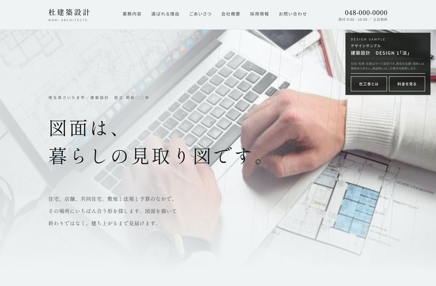
淡あわい雨に洗われた白と、雨脚。淡は、色や音がすこしだけ残っている状態を指します。言い切らないこと、すべてを見せないことを、日本は美しいとしてきました。雨上がりの空を一枚の紙にしました。飾りの罫は、一本も引いていません。実物を見る ↗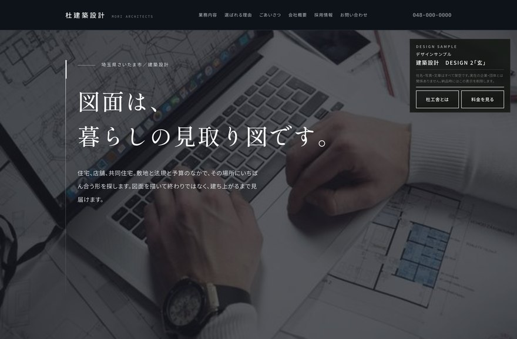
玄げん写真を、闇に沈めて。玄は黒であり、奥が深くて容易には見えないものを指します。幽玄の玄、玄人の玄。見せないことで、かえって深く見せる。写真に、濃さの変わらない一枚の膜を掛けて、同じ闇に沈めました。実物を見る ↗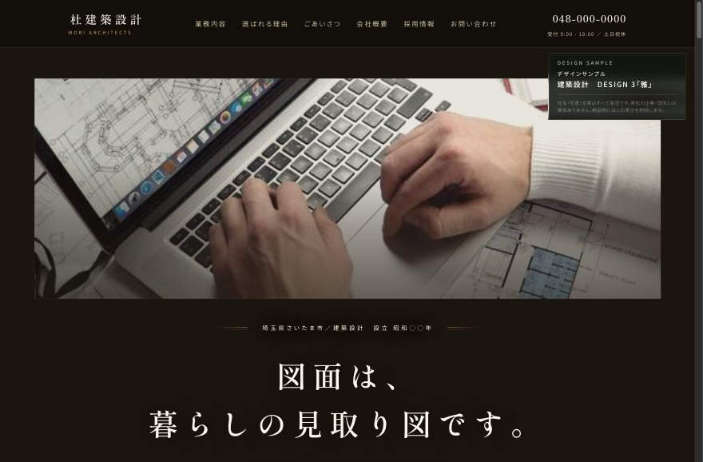
雅みやび灯のような墨に、金の細線。雅は、荒々しさを削いだあとに残る美しさの名です。声を張らず、急がず、細部にだけ心を配る。夜の座敷のしつらえを思って組みました。写真は紙に貼らず、金の細い枠に掛けています。実物を見る ↗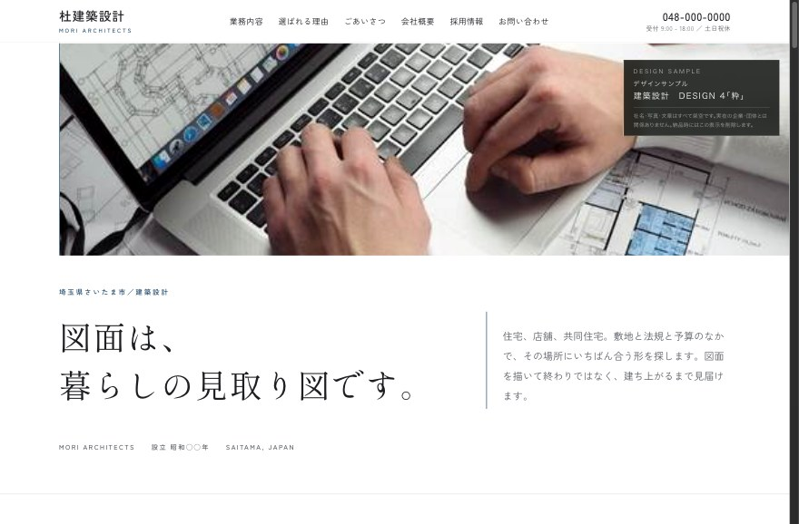
粋いき藍の、細い縦線だけ。粋は、飾りを削って、それでも残るもののことです。九鬼周造は、いきは横縞より縦縞を、太い縞より細い縞を選ぶと書きました。ですから、細い縦の線だけで組みました。何を足すかではなく、何を残すかで決めています。実物を見る ↗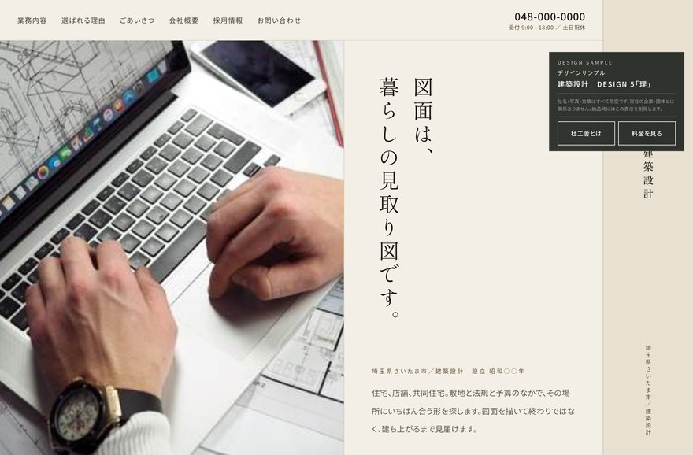
理り一本の筋を、通す。理は、もともと玉（ぎょく）の筋目のことで、そこから物事の筋道を指すようになりました。縦に流れる言葉と、整えた余白。題字と社名を縦に組み、本文は横書きで読みやすく。掛軸を思わせる紙と表装が、仕事への姿勢を静かに伝えます。実物を見る ↗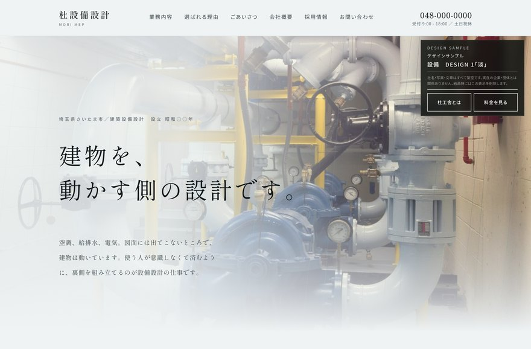
淡あわい雨に洗われた白と、雨脚。淡は、色や音がすこしだけ残っている状態を指します。言い切らないこと、すべてを見せないことを、日本は美しいとしてきました。雨上がりの空を一枚の紙にしました。飾りの罫は、一本も引いていません。実物を見る ↗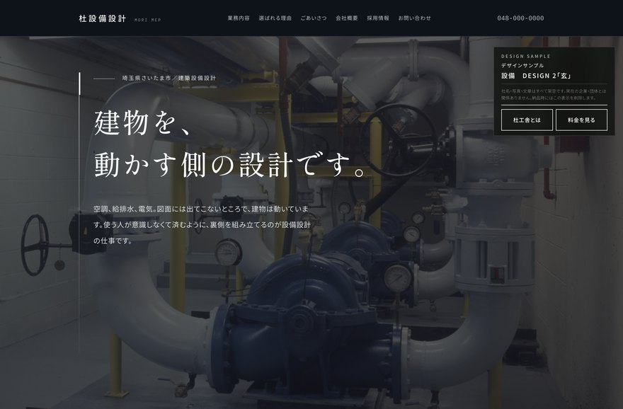
玄げん写真を、闇に沈めて。玄は黒であり、奥が深くて容易には見えないものを指します。幽玄の玄、玄人の玄。見せないことで、かえって深く見せる。写真に、濃さの変わらない一枚の膜を掛けて、同じ闇に沈めました。実物を見る ↗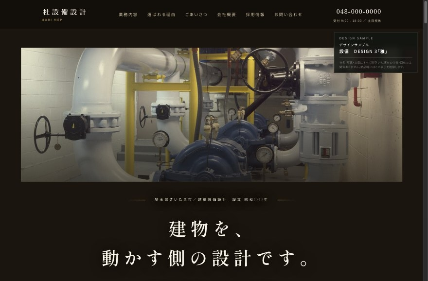
雅みやび灯のような墨に、金の細線。雅は、荒々しさを削いだあとに残る美しさの名です。声を張らず、急がず、細部にだけ心を配る。夜の座敷のしつらえを思って組みました。写真は紙に貼らず、金の細い枠に掛けています。実物を見る ↗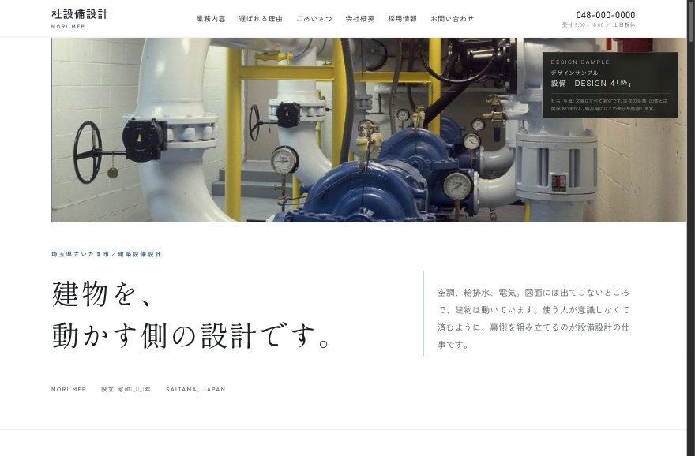
粋いき藍の、細い縦線だけ。粋は、飾りを削って、それでも残るもののことです。九鬼周造は、いきは横縞より縦縞を、太い縞より細い縞を選ぶと書きました。ですから、細い縦の線だけで組みました。何を足すかではなく、何を残すかで決めています。実物を見る ↗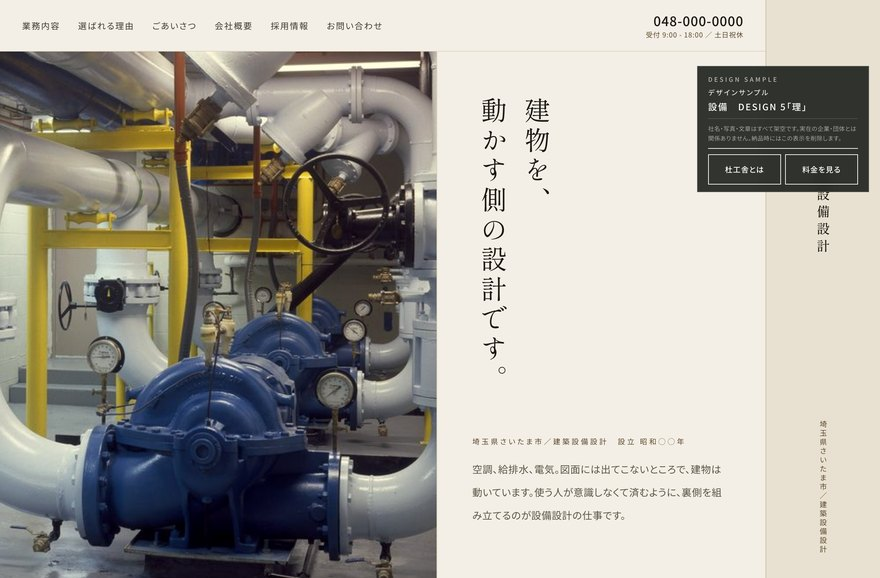
理り一本の筋を、通す。理は、もともと玉（ぎょく）の筋目のことで、そこから物事の筋道を指すようになりました。縦に流れる言葉と、整えた余白。題字と社名を縦に組み、本文は横書きで読みやすく。掛軸を思わせる紙と表装が、仕事への姿勢を静かに伝えます。実物を見る ↗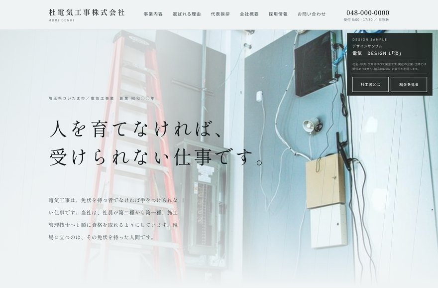
淡あわい雨に洗われた白と、雨脚。淡は、色や音がすこしだけ残っている状態を指します。言い切らないこと、すべてを見せないことを、日本は美しいとしてきました。雨上がりの空を一枚の紙にしました。飾りの罫は、一本も引いていません。実物を見る ↗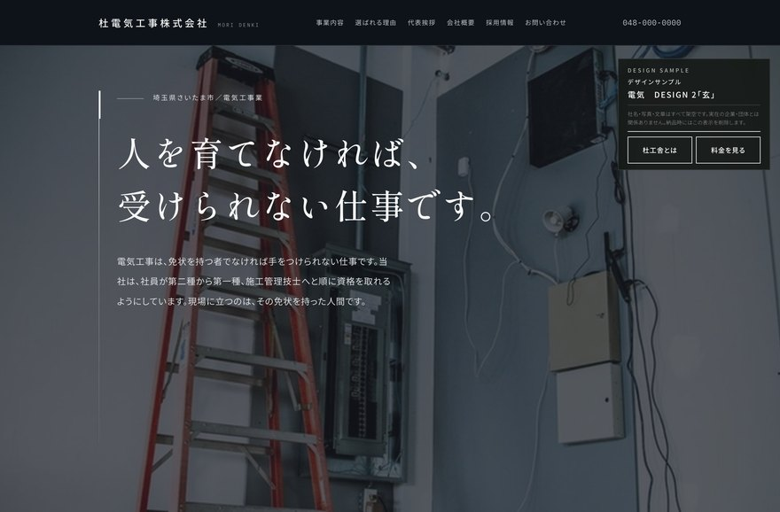
玄げん写真を、闇に沈めて。玄は黒であり、奥が深くて容易には見えないものを指します。幽玄の玄、玄人の玄。見せないことで、かえって深く見せる。写真に、濃さの変わらない一枚の膜を掛けて、同じ闇に沈めました。実物を見る ↗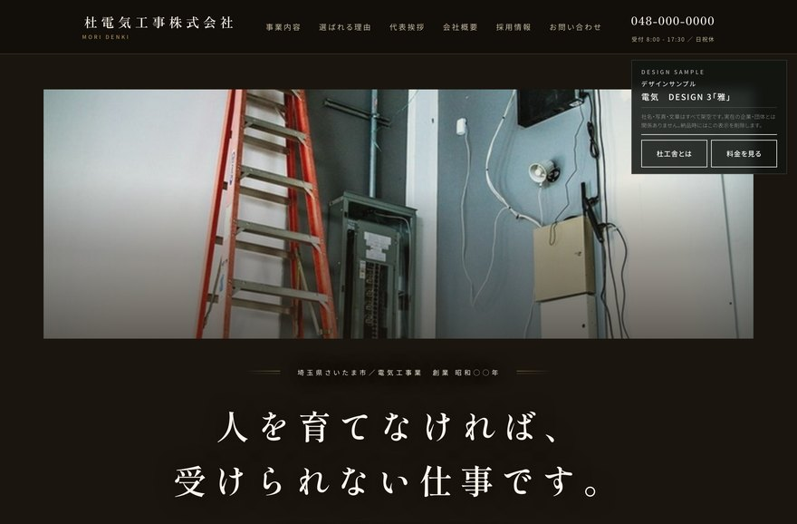
雅みやび灯のような墨に、金の細線。雅は、荒々しさを削いだあとに残る美しさの名です。声を張らず、急がず、細部にだけ心を配る。夜の座敷のしつらえを思って組みました。写真は紙に貼らず、金の細い枠に掛けています。実物を見る ↗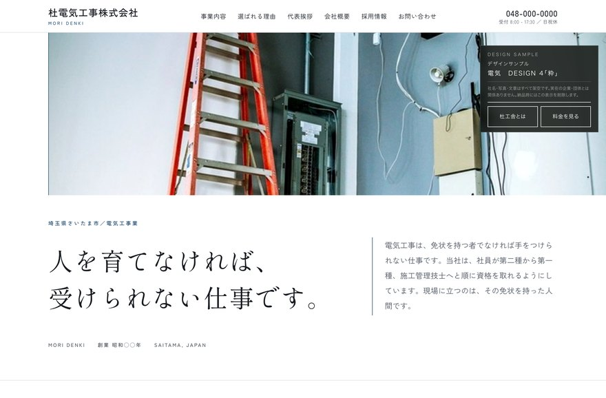
粋いき藍の、細い縦線だけ。粋は、飾りを削って、それでも残るもののことです。九鬼周造は、いきは横縞より縦縞を、太い縞より細い縞を選ぶと書きました。ですから、細い縦の線だけで組みました。何を足すかではなく、何を残すかで決めています。実物を見る ↗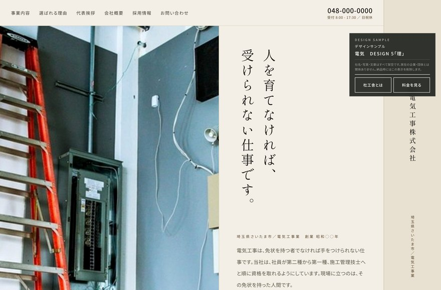
理り一本の筋を、通す。理は、もともと玉（ぎょく）の筋目のことで、そこから物事の筋道を指すようになりました。縦に流れる言葉と、整えた余白。題字と社名を縦に組み、本文は横書きで読みやすく。掛軸を思わせる紙と表装が、仕事への姿勢を静かに伝えます。実物を見る ↗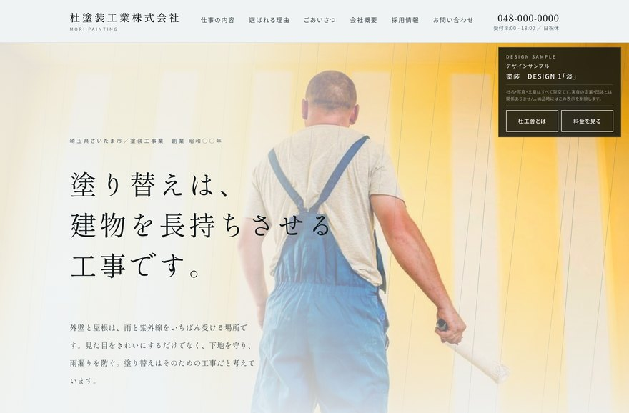
淡あわい雨に洗われた白と、雨脚。淡は、色や音がすこしだけ残っている状態を指します。言い切らないこと、すべてを見せないことを、日本は美しいとしてきました。雨上がりの空を一枚の紙にしました。飾りの罫は、一本も引いていません。実物を見る ↗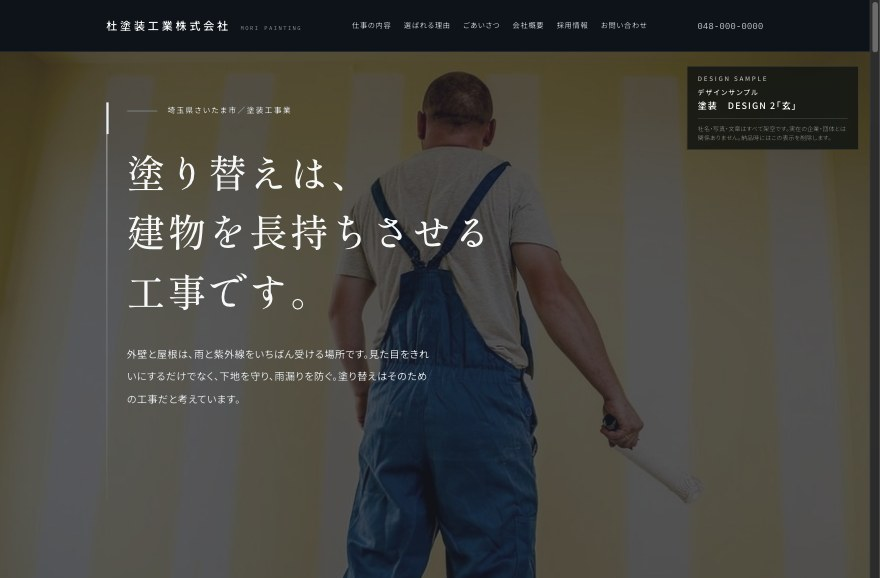
玄げん写真を、闇に沈めて。玄は黒であり、奥が深くて容易には見えないものを指します。幽玄の玄、玄人の玄。見せないことで、かえって深く見せる。写真に、濃さの変わらない一枚の膜を掛けて、同じ闇に沈めました。実物を見る ↗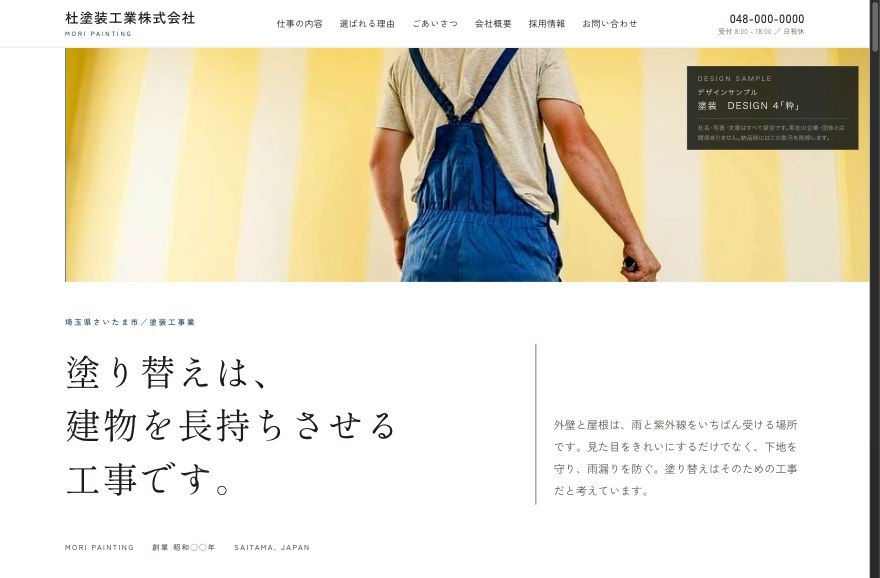
粋いき藍の、細い縦線だけ。粋は、飾りを削って、それでも残るもののことです。九鬼周造は、いきは横縞より縦縞を、太い縞より細い縞を選ぶと書きました。ですから、細い縦の線だけで組みました。何を足すかではなく、何を残すかで決めています。実物を見る ↗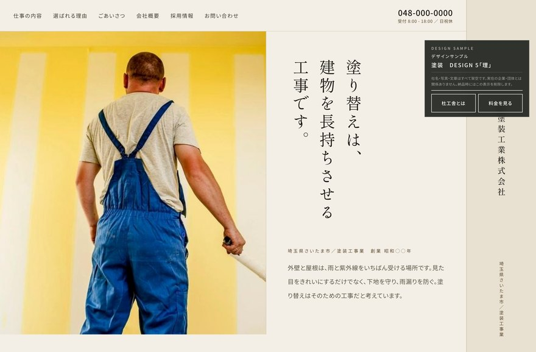
理り一本の筋を、通す。理は、もともと玉（ぎょく）の筋目のことで、そこから物事の筋道を指すようになりました。縦に流れる言葉と、整えた余白。題字と社名を縦に組み、本文は横書きで読みやすく。掛軸を思わせる紙と表装が、仕事への姿勢を静かに伝えます。実物を見る ↗ 淡あわい雨に洗われた白と、雨脚。淡は、色や音がすこしだけ残っている状態を指します。言い切らないこと、すべてを見せないことを、日本は美しいとしてきました。雨上がりの空を一枚の紙にしました。飾りの罫は、一本も引いていません。実物を見る ↗
淡あわい雨に洗われた白と、雨脚。淡は、色や音がすこしだけ残っている状態を指します。言い切らないこと、すべてを見せないことを、日本は美しいとしてきました。雨上がりの空を一枚の紙にしました。飾りの罫は、一本も引いていません。実物を見る ↗ 玄げん写真を、闇に沈めて。玄は黒であり、奥が深くて容易には見えないものを指します。幽玄の玄、玄人の玄。見せないことで、かえって深く見せる。写真に、濃さの変わらない一枚の膜を掛けて、同じ闇に沈めました。実物を見る ↗
玄げん写真を、闇に沈めて。玄は黒であり、奥が深くて容易には見えないものを指します。幽玄の玄、玄人の玄。見せないことで、かえって深く見せる。写真に、濃さの変わらない一枚の膜を掛けて、同じ闇に沈めました。実物を見る ↗ 雅みやび灯のような墨に、金の細線。雅は、荒々しさを削いだあとに残る美しさの名です。声を張らず、急がず、細部にだけ心を配る。夜の座敷のしつらえを思って組みました。写真は紙に貼らず、金の細い枠に掛けています。実物を見る ↗
雅みやび灯のような墨に、金の細線。雅は、荒々しさを削いだあとに残る美しさの名です。声を張らず、急がず、細部にだけ心を配る。夜の座敷のしつらえを思って組みました。写真は紙に貼らず、金の細い枠に掛けています。実物を見る ↗ 粋いき藍の、細い縦線だけ。粋は、飾りを削って、それでも残るもののことです。九鬼周造は、いきは横縞より縦縞を、太い縞より細い縞を選ぶと書きました。ですから、細い縦の線だけで組みました。何を足すかではなく、何を残すかで決めています。実物を見る ↗
粋いき藍の、細い縦線だけ。粋は、飾りを削って、それでも残るもののことです。九鬼周造は、いきは横縞より縦縞を、太い縞より細い縞を選ぶと書きました。ですから、細い縦の線だけで組みました。何を足すかではなく、何を残すかで決めています。実物を見る ↗ 理り一本の筋を、通す。理は、もともと玉（ぎょく）の筋目のことで、そこから物事の筋道を指すようになりました。縦に流れる言葉と、整えた余白。題字と社名を縦に組み、本文は横書きで読みやすく。掛軸を思わせる紙と表装が、仕事への姿勢を静かに伝えます。実物を見る ↗
理り一本の筋を、通す。理は、もともと玉（ぎょく）の筋目のことで、そこから物事の筋道を指すようになりました。縦に流れる言葉と、整えた余白。題字と社名を縦に組み、本文は横書きで読みやすく。掛軸を思わせる紙と表装が、仕事への姿勢を静かに伝えます。実物を見る ↗ 淡あわい雨に洗われた白と、雨脚。淡は、色や音がすこしだけ残っている状態を指します。言い切らないこと、すべてを見せないことを、日本は美しいとしてきました。雨上がりの空を一枚の紙にしました。飾りの罫は、一本も引いていません。実物を見る ↗
淡あわい雨に洗われた白と、雨脚。淡は、色や音がすこしだけ残っている状態を指します。言い切らないこと、すべてを見せないことを、日本は美しいとしてきました。雨上がりの空を一枚の紙にしました。飾りの罫は、一本も引いていません。実物を見る ↗ 玄げん写真を、闇に沈めて。玄は黒であり、奥が深くて容易には見えないものを指します。幽玄の玄、玄人の玄。見せないことで、かえって深く見せる。写真に、濃さの変わらない一枚の膜を掛けて、同じ闇に沈めました。実物を見る ↗
玄げん写真を、闇に沈めて。玄は黒であり、奥が深くて容易には見えないものを指します。幽玄の玄、玄人の玄。見せないことで、かえって深く見せる。写真に、濃さの変わらない一枚の膜を掛けて、同じ闇に沈めました。実物を見る ↗ 雅みやび灯のような墨に、金の細線。雅は、荒々しさを削いだあとに残る美しさの名です。声を張らず、急がず、細部にだけ心を配る。夜の座敷のしつらえを思って組みました。写真は紙に貼らず、金の細い枠に掛けています。実物を見る ↗
雅みやび灯のような墨に、金の細線。雅は、荒々しさを削いだあとに残る美しさの名です。声を張らず、急がず、細部にだけ心を配る。夜の座敷のしつらえを思って組みました。写真は紙に貼らず、金の細い枠に掛けています。実物を見る ↗ 粋いき藍の、細い縦線だけ。粋は、飾りを削って、それでも残るもののことです。九鬼周造は、いきは横縞より縦縞を、太い縞より細い縞を選ぶと書きました。ですから、細い縦の線だけで組みました。何を足すかではなく、何を残すかで決めています。実物を見る ↗
粋いき藍の、細い縦線だけ。粋は、飾りを削って、それでも残るもののことです。九鬼周造は、いきは横縞より縦縞を、太い縞より細い縞を選ぶと書きました。ですから、細い縦の線だけで組みました。何を足すかではなく、何を残すかで決めています。実物を見る ↗ 理り一本の筋を、通す。理は、もともと玉（ぎょく）の筋目のことで、そこから物事の筋道を指すようになりました。縦に流れる言葉と、整えた余白。題字と社名を縦に組み、本文は横書きで読みやすく。掛軸を思わせる紙と表装が、仕事への姿勢を静かに伝えます。実物を見る ↗
理り一本の筋を、通す。理は、もともと玉（ぎょく）の筋目のことで、そこから物事の筋道を指すようになりました。縦に流れる言葉と、整えた余白。題字と社名を縦に組み、本文は横書きで読みやすく。掛軸を思わせる紙と表装が、仕事への姿勢を静かに伝えます。実物を見る ↗ 淡あわい雨に洗われた白と、雨脚。淡は、色や音がすこしだけ残っている状態を指します。言い切らないこと、すべてを見せないことを、日本は美しいとしてきました。雨上がりの空を一枚の紙にしました。飾りの罫は、一本も引いていません。実物を見る ↗
淡あわい雨に洗われた白と、雨脚。淡は、色や音がすこしだけ残っている状態を指します。言い切らないこと、すべてを見せないことを、日本は美しいとしてきました。雨上がりの空を一枚の紙にしました。飾りの罫は、一本も引いていません。実物を見る ↗ 玄げん写真を、闇に沈めて。玄は黒であり、奥が深くて容易には見えないものを指します。幽玄の玄、玄人の玄。見せないことで、かえって深く見せる。写真に、濃さの変わらない一枚の膜を掛けて、同じ闇に沈めました。実物を見る ↗
玄げん写真を、闇に沈めて。玄は黒であり、奥が深くて容易には見えないものを指します。幽玄の玄、玄人の玄。見せないことで、かえって深く見せる。写真に、濃さの変わらない一枚の膜を掛けて、同じ闇に沈めました。実物を見る ↗ 雅みやび灯のような墨に、金の細線。雅は、荒々しさを削いだあとに残る美しさの名です。声を張らず、急がず、細部にだけ心を配る。夜の座敷のしつらえを思って組みました。写真は紙に貼らず、金の細い枠に掛けています。実物を見る ↗
雅みやび灯のような墨に、金の細線。雅は、荒々しさを削いだあとに残る美しさの名です。声を張らず、急がず、細部にだけ心を配る。夜の座敷のしつらえを思って組みました。写真は紙に貼らず、金の細い枠に掛けています。実物を見る ↗ 粋いき藍の、細い縦線だけ。粋は、飾りを削って、それでも残るもののことです。九鬼周造は、いきは横縞より縦縞を、太い縞より細い縞を選ぶと書きました。ですから、細い縦の線だけで組みました。何を足すかではなく、何を残すかで決めています。実物を見る ↗
粋いき藍の、細い縦線だけ。粋は、飾りを削って、それでも残るもののことです。九鬼周造は、いきは横縞より縦縞を、太い縞より細い縞を選ぶと書きました。ですから、細い縦の線だけで組みました。何を足すかではなく、何を残すかで決めています。実物を見る ↗ 理り一本の筋を、通す。理は、もともと玉（ぎょく）の筋目のことで、そこから物事の筋道を指すようになりました。縦に流れる言葉と、整えた余白。題字と社名を縦に組み、本文は横書きで読みやすく。掛軸を思わせる紙と表装が、仕事への姿勢を静かに伝えます。実物を見る ↗
理り一本の筋を、通す。理は、もともと玉（ぎょく）の筋目のことで、そこから物事の筋道を指すようになりました。縦に流れる言葉と、整えた余白。題字と社名を縦に組み、本文は横書きで読みやすく。掛軸を思わせる紙と表装が、仕事への姿勢を静かに伝えます。実物を見る ↗ 淡あわい雨に洗われた白と、雨脚。淡は、色や音がすこしだけ残っている状態を指します。言い切らないこと、すべてを見せないことを、日本は美しいとしてきました。雨上がりの空を一枚の紙にしました。飾りの罫は、一本も引いていません。実物を見る ↗
淡あわい雨に洗われた白と、雨脚。淡は、色や音がすこしだけ残っている状態を指します。言い切らないこと、すべてを見せないことを、日本は美しいとしてきました。雨上がりの空を一枚の紙にしました。飾りの罫は、一本も引いていません。実物を見る ↗ 玄げん写真を、闇に沈めて。玄は黒であり、奥が深くて容易には見えないものを指します。幽玄の玄、玄人の玄。見せないことで、かえって深く見せる。写真に、濃さの変わらない一枚の膜を掛けて、同じ闇に沈めました。実物を見る ↗
玄げん写真を、闇に沈めて。玄は黒であり、奥が深くて容易には見えないものを指します。幽玄の玄、玄人の玄。見せないことで、かえって深く見せる。写真に、濃さの変わらない一枚の膜を掛けて、同じ闇に沈めました。実物を見る ↗ 雅みやび灯のような墨に、金の細線。雅は、荒々しさを削いだあとに残る美しさの名です。声を張らず、急がず、細部にだけ心を配る。夜の座敷のしつらえを思って組みました。写真は紙に貼らず、金の細い枠に掛けています。実物を見る ↗
雅みやび灯のような墨に、金の細線。雅は、荒々しさを削いだあとに残る美しさの名です。声を張らず、急がず、細部にだけ心を配る。夜の座敷のしつらえを思って組みました。写真は紙に貼らず、金の細い枠に掛けています。実物を見る ↗ 粋いき藍の、細い縦線だけ。粋は、飾りを削って、それでも残るもののことです。九鬼周造は、いきは横縞より縦縞を、太い縞より細い縞を選ぶと書きました。ですから、細い縦の線だけで組みました。何を足すかではなく、何を残すかで決めています。実物を見る ↗
粋いき藍の、細い縦線だけ。粋は、飾りを削って、それでも残るもののことです。九鬼周造は、いきは横縞より縦縞を、太い縞より細い縞を選ぶと書きました。ですから、細い縦の線だけで組みました。何を足すかではなく、何を残すかで決めています。実物を見る ↗ 理り一本の筋を、通す。理は、もともと玉（ぎょく）の筋目のことで、そこから物事の筋道を指すようになりました。縦に流れる言葉と、整えた余白。題字と社名を縦に組み、本文は横書きで読みやすく。掛軸を思わせる紙と表装が、仕事への姿勢を静かに伝えます。実物を見る ↗
理り一本の筋を、通す。理は、もともと玉（ぎょく）の筋目のことで、そこから物事の筋道を指すようになりました。縦に流れる言葉と、整えた余白。題字と社名を縦に組み、本文は横書きで読みやすく。掛軸を思わせる紙と表装が、仕事への姿勢を静かに伝えます。実物を見る ↗ 淡あわい雨に洗われた白と、雨脚。淡は、色や音がすこしだけ残っている状態を指します。言い切らないこと、すべてを見せないことを、日本は美しいとしてきました。雨上がりの空を一枚の紙にしました。飾りの罫は、一本も引いていません。実物を見る ↗
淡あわい雨に洗われた白と、雨脚。淡は、色や音がすこしだけ残っている状態を指します。言い切らないこと、すべてを見せないことを、日本は美しいとしてきました。雨上がりの空を一枚の紙にしました。飾りの罫は、一本も引いていません。実物を見る ↗ 玄げん写真を、闇に沈めて。玄は黒であり、奥が深くて容易には見えないものを指します。幽玄の玄、玄人の玄。見せないことで、かえって深く見せる。写真に、濃さの変わらない一枚の膜を掛けて、同じ闇に沈めました。実物を見る ↗
玄げん写真を、闇に沈めて。玄は黒であり、奥が深くて容易には見えないものを指します。幽玄の玄、玄人の玄。見せないことで、かえって深く見せる。写真に、濃さの変わらない一枚の膜を掛けて、同じ闇に沈めました。実物を見る ↗ 雅みやび灯のような墨に、金の細線。雅は、荒々しさを削いだあとに残る美しさの名です。声を張らず、急がず、細部にだけ心を配る。夜の座敷のしつらえを思って組みました。写真は紙に貼らず、金の細い枠に掛けています。実物を見る ↗
雅みやび灯のような墨に、金の細線。雅は、荒々しさを削いだあとに残る美しさの名です。声を張らず、急がず、細部にだけ心を配る。夜の座敷のしつらえを思って組みました。写真は紙に貼らず、金の細い枠に掛けています。実物を見る ↗ 粋いき藍の、細い縦線だけ。粋は、飾りを削って、それでも残るもののことです。九鬼周造は、いきは横縞より縦縞を、太い縞より細い縞を選ぶと書きました。ですから、細い縦の線だけで組みました。何を足すかではなく、何を残すかで決めています。実物を見る ↗
粋いき藍の、細い縦線だけ。粋は、飾りを削って、それでも残るもののことです。九鬼周造は、いきは横縞より縦縞を、太い縞より細い縞を選ぶと書きました。ですから、細い縦の線だけで組みました。何を足すかではなく、何を残すかで決めています。実物を見る ↗ 理り一本の筋を、通す。理は、もともと玉（ぎょく）の筋目のことで、そこから物事の筋道を指すようになりました。縦に流れる言葉と、整えた余白。題字と社名を縦に組み、本文は横書きで読みやすく。掛軸を思わせる紙と表装が、仕事への姿勢を静かに伝えます。実物を見る ↗
理り一本の筋を、通す。理は、もともと玉（ぎょく）の筋目のことで、そこから物事の筋道を指すようになりました。縦に流れる言葉と、整えた余白。題字と社名を縦に組み、本文は横書きで読みやすく。掛軸を思わせる紙と表装が、仕事への姿勢を静かに伝えます。実物を見る ↗ 淡あわい雨に洗われた白と、雨脚。淡は、色や音がすこしだけ残っている状態を指します。言い切らないこと、すべてを見せないことを、日本は美しいとしてきました。雨上がりの空を一枚の紙にしました。飾りの罫は、一本も引いていません。実物を見る ↗
淡あわい雨に洗われた白と、雨脚。淡は、色や音がすこしだけ残っている状態を指します。言い切らないこと、すべてを見せないことを、日本は美しいとしてきました。雨上がりの空を一枚の紙にしました。飾りの罫は、一本も引いていません。実物を見る ↗ 玄げん写真を、闇に沈めて。玄は黒であり、奥が深くて容易には見えないものを指します。幽玄の玄、玄人の玄。見せないことで、かえって深く見せる。写真に、濃さの変わらない一枚の膜を掛けて、同じ闇に沈めました。実物を見る ↗
玄げん写真を、闇に沈めて。玄は黒であり、奥が深くて容易には見えないものを指します。幽玄の玄、玄人の玄。見せないことで、かえって深く見せる。写真に、濃さの変わらない一枚の膜を掛けて、同じ闇に沈めました。実物を見る ↗ 雅みやび灯のような墨に、金の細線。雅は、荒々しさを削いだあとに残る美しさの名です。声を張らず、急がず、細部にだけ心を配る。夜の座敷のしつらえを思って組みました。写真は紙に貼らず、金の細い枠に掛けています。実物を見る ↗
雅みやび灯のような墨に、金の細線。雅は、荒々しさを削いだあとに残る美しさの名です。声を張らず、急がず、細部にだけ心を配る。夜の座敷のしつらえを思って組みました。写真は紙に貼らず、金の細い枠に掛けています。実物を見る ↗ 粋いき藍の、細い縦線だけ。粋は、飾りを削って、それでも残るもののことです。九鬼周造は、いきは横縞より縦縞を、太い縞より細い縞を選ぶと書きました。ですから、細い縦の線だけで組みました。何を足すかではなく、何を残すかで決めています。実物を見る ↗
粋いき藍の、細い縦線だけ。粋は、飾りを削って、それでも残るもののことです。九鬼周造は、いきは横縞より縦縞を、太い縞より細い縞を選ぶと書きました。ですから、細い縦の線だけで組みました。何を足すかではなく、何を残すかで決めています。実物を見る ↗ 理り一本の筋を、通す。理は、もともと玉（ぎょく）の筋目のことで、そこから物事の筋道を指すようになりました。縦に流れる言葉と、整えた余白。題字と社名を縦に組み、本文は横書きで読みやすく。掛軸を思わせる紙と表装が、仕事への姿勢を静かに伝えます。実物を見る ↗
理り一本の筋を、通す。理は、もともと玉（ぎょく）の筋目のことで、そこから物事の筋道を指すようになりました。縦に流れる言葉と、整えた余白。題字と社名を縦に組み、本文は横書きで読みやすく。掛軸を思わせる紙と表装が、仕事への姿勢を静かに伝えます。実物を見る ↗ 淡あわい雨に洗われた白と、雨脚。淡は、色や音がすこしだけ残っている状態を指します。言い切らないこと、すべてを見せないことを、日本は美しいとしてきました。雨上がりの空を一枚の紙にしました。飾りの罫は、一本も引いていません。実物を見る ↗
淡あわい雨に洗われた白と、雨脚。淡は、色や音がすこしだけ残っている状態を指します。言い切らないこと、すべてを見せないことを、日本は美しいとしてきました。雨上がりの空を一枚の紙にしました。飾りの罫は、一本も引いていません。実物を見る ↗ 玄げん写真を、闇に沈めて。玄は黒であり、奥が深くて容易には見えないものを指します。幽玄の玄、玄人の玄。見せないことで、かえって深く見せる。写真に、濃さの変わらない一枚の膜を掛けて、同じ闇に沈めました。実物を見る ↗
玄げん写真を、闇に沈めて。玄は黒であり、奥が深くて容易には見えないものを指します。幽玄の玄、玄人の玄。見せないことで、かえって深く見せる。写真に、濃さの変わらない一枚の膜を掛けて、同じ闇に沈めました。実物を見る ↗ 雅みやび灯のような墨に、金の細線。雅は、荒々しさを削いだあとに残る美しさの名です。声を張らず、急がず、細部にだけ心を配る。夜の座敷のしつらえを思って組みました。写真は紙に貼らず、金の細い枠に掛けています。実物を見る ↗
雅みやび灯のような墨に、金の細線。雅は、荒々しさを削いだあとに残る美しさの名です。声を張らず、急がず、細部にだけ心を配る。夜の座敷のしつらえを思って組みました。写真は紙に貼らず、金の細い枠に掛けています。実物を見る ↗ 粋いき藍の、細い縦線だけ。粋は、飾りを削って、それでも残るもののことです。九鬼周造は、いきは横縞より縦縞を、太い縞より細い縞を選ぶと書きました。ですから、細い縦の線だけで組みました。何を足すかではなく、何を残すかで決めています。実物を見る ↗
粋いき藍の、細い縦線だけ。粋は、飾りを削って、それでも残るもののことです。九鬼周造は、いきは横縞より縦縞を、太い縞より細い縞を選ぶと書きました。ですから、細い縦の線だけで組みました。何を足すかではなく、何を残すかで決めています。実物を見る ↗ 理り一本の筋を、通す。理は、もともと玉（ぎょく）の筋目のことで、そこから物事の筋道を指すようになりました。縦に流れる言葉と、整えた余白。題字と社名を縦に組み、本文は横書きで読みやすく。掛軸を思わせる紙と表装が、仕事への姿勢を静かに伝えます。実物を見る ↗
理り一本の筋を、通す。理は、もともと玉（ぎょく）の筋目のことで、そこから物事の筋道を指すようになりました。縦に流れる言葉と、整えた余白。題字と社名を縦に組み、本文は横書きで読みやすく。掛軸を思わせる紙と表装が、仕事への姿勢を静かに伝えます。実物を見る ↗ 淡あわい雨に洗われた白と、雨脚。淡は、色や音がすこしだけ残っている状態を指します。言い切らないこと、すべてを見せないことを、日本は美しいとしてきました。雨上がりの空を一枚の紙にしました。飾りの罫は、一本も引いていません。実物を見る ↗
淡あわい雨に洗われた白と、雨脚。淡は、色や音がすこしだけ残っている状態を指します。言い切らないこと、すべてを見せないことを、日本は美しいとしてきました。雨上がりの空を一枚の紙にしました。飾りの罫は、一本も引いていません。実物を見る ↗ 玄げん写真を、闇に沈めて。玄は黒であり、奥が深くて容易には見えないものを指します。幽玄の玄、玄人の玄。見せないことで、かえって深く見せる。写真に、濃さの変わらない一枚の膜を掛けて、同じ闇に沈めました。実物を見る ↗
玄げん写真を、闇に沈めて。玄は黒であり、奥が深くて容易には見えないものを指します。幽玄の玄、玄人の玄。見せないことで、かえって深く見せる。写真に、濃さの変わらない一枚の膜を掛けて、同じ闇に沈めました。実物を見る ↗ 雅みやび灯のような墨に、金の細線。雅は、荒々しさを削いだあとに残る美しさの名です。声を張らず、急がず、細部にだけ心を配る。夜の座敷のしつらえを思って組みました。写真は紙に貼らず、金の細い枠に掛けています。実物を見る ↗
雅みやび灯のような墨に、金の細線。雅は、荒々しさを削いだあとに残る美しさの名です。声を張らず、急がず、細部にだけ心を配る。夜の座敷のしつらえを思って組みました。写真は紙に貼らず、金の細い枠に掛けています。実物を見る ↗ 粋いき藍の、細い縦線だけ。粋は、飾りを削って、それでも残るもののことです。九鬼周造は、いきは横縞より縦縞を、太い縞より細い縞を選ぶと書きました。ですから、細い縦の線だけで組みました。何を足すかではなく、何を残すかで決めています。実物を見る ↗
粋いき藍の、細い縦線だけ。粋は、飾りを削って、それでも残るもののことです。九鬼周造は、いきは横縞より縦縞を、太い縞より細い縞を選ぶと書きました。ですから、細い縦の線だけで組みました。何を足すかではなく、何を残すかで決めています。実物を見る ↗ 理り一本の筋を、通す。理は、もともと玉（ぎょく）の筋目のことで、そこから物事の筋道を指すようになりました。縦に流れる言葉と、整えた余白。題字と社名を縦に組み、本文は横書きで読みやすく。掛軸を思わせる紙と表装が、仕事への姿勢を静かに伝えます。実物を見る ↗
理り一本の筋を、通す。理は、もともと玉（ぎょく）の筋目のことで、そこから物事の筋道を指すようになりました。縦に流れる言葉と、整えた余白。題字と社名を縦に組み、本文は横書きで読みやすく。掛軸を思わせる紙と表装が、仕事への姿勢を静かに伝えます。実物を見る ↗ 淡あわい雨に洗われた白と、雨脚。淡は、色や音がすこしだけ残っている状態を指します。言い切らないこと、すべてを見せないことを、日本は美しいとしてきました。雨上がりの空を一枚の紙にしました。飾りの罫は、一本も引いていません。実物を見る ↗
淡あわい雨に洗われた白と、雨脚。淡は、色や音がすこしだけ残っている状態を指します。言い切らないこと、すべてを見せないことを、日本は美しいとしてきました。雨上がりの空を一枚の紙にしました。飾りの罫は、一本も引いていません。実物を見る ↗ 玄げん写真を、闇に沈めて。玄は黒であり、奥が深くて容易には見えないものを指します。幽玄の玄、玄人の玄。見せないことで、かえって深く見せる。写真に、濃さの変わらない一枚の膜を掛けて、同じ闇に沈めました。実物を見る ↗
玄げん写真を、闇に沈めて。玄は黒であり、奥が深くて容易には見えないものを指します。幽玄の玄、玄人の玄。見せないことで、かえって深く見せる。写真に、濃さの変わらない一枚の膜を掛けて、同じ闇に沈めました。実物を見る ↗ 雅みやび灯のような墨に、金の細線。雅は、荒々しさを削いだあとに残る美しさの名です。声を張らず、急がず、細部にだけ心を配る。夜の座敷のしつらえを思って組みました。写真は紙に貼らず、金の細い枠に掛けています。実物を見る ↗
雅みやび灯のような墨に、金の細線。雅は、荒々しさを削いだあとに残る美しさの名です。声を張らず、急がず、細部にだけ心を配る。夜の座敷のしつらえを思って組みました。写真は紙に貼らず、金の細い枠に掛けています。実物を見る ↗ 粋いき藍の、細い縦線だけ。粋は、飾りを削って、それでも残るもののことです。九鬼周造は、いきは横縞より縦縞を、太い縞より細い縞を選ぶと書きました。ですから、細い縦の線だけで組みました。何を足すかではなく、何を残すかで決めています。実物を見る ↗
粋いき藍の、細い縦線だけ。粋は、飾りを削って、それでも残るもののことです。九鬼周造は、いきは横縞より縦縞を、太い縞より細い縞を選ぶと書きました。ですから、細い縦の線だけで組みました。何を足すかではなく、何を残すかで決めています。実物を見る ↗ 理り一本の筋を、通す。理は、もともと玉（ぎょく）の筋目のことで、そこから物事の筋道を指すようになりました。縦に流れる言葉と、整えた余白。題字と社名を縦に組み、本文は横書きで読みやすく。掛軸を思わせる紙と表装が、仕事への姿勢を静かに伝えます。実物を見る ↗
理り一本の筋を、通す。理は、もともと玉（ぎょく）の筋目のことで、そこから物事の筋道を指すようになりました。縦に流れる言葉と、整えた余白。題字と社名を縦に組み、本文は横書きで読みやすく。掛軸を思わせる紙と表装が、仕事への姿勢を静かに伝えます。実物を見る ↗ 淡あわい雨に洗われた白と、雨脚。淡は、色や音がすこしだけ残っている状態を指します。言い切らないこと、すべてを見せないことを、日本は美しいとしてきました。雨上がりの空を一枚の紙にしました。飾りの罫は、一本も引いていません。実物を見る ↗
淡あわい雨に洗われた白と、雨脚。淡は、色や音がすこしだけ残っている状態を指します。言い切らないこと、すべてを見せないことを、日本は美しいとしてきました。雨上がりの空を一枚の紙にしました。飾りの罫は、一本も引いていません。実物を見る ↗ 玄げん写真を、闇に沈めて。玄は黒であり、奥が深くて容易には見えないものを指します。幽玄の玄、玄人の玄。見せないことで、かえって深く見せる。写真に、濃さの変わらない一枚の膜を掛けて、同じ闇に沈めました。実物を見る ↗
玄げん写真を、闇に沈めて。玄は黒であり、奥が深くて容易には見えないものを指します。幽玄の玄、玄人の玄。見せないことで、かえって深く見せる。写真に、濃さの変わらない一枚の膜を掛けて、同じ闇に沈めました。実物を見る ↗ 雅みやび灯のような墨に、金の細線。雅は、荒々しさを削いだあとに残る美しさの名です。声を張らず、急がず、細部にだけ心を配る。夜の座敷のしつらえを思って組みました。写真は紙に貼らず、金の細い枠に掛けています。実物を見る ↗
雅みやび灯のような墨に、金の細線。雅は、荒々しさを削いだあとに残る美しさの名です。声を張らず、急がず、細部にだけ心を配る。夜の座敷のしつらえを思って組みました。写真は紙に貼らず、金の細い枠に掛けています。実物を見る ↗ 粋いき藍の、細い縦線だけ。粋は、飾りを削って、それでも残るもののことです。九鬼周造は、いきは横縞より縦縞を、太い縞より細い縞を選ぶと書きました。ですから、細い縦の線だけで組みました。何を足すかではなく、何を残すかで決めています。実物を見る ↗
粋いき藍の、細い縦線だけ。粋は、飾りを削って、それでも残るもののことです。九鬼周造は、いきは横縞より縦縞を、太い縞より細い縞を選ぶと書きました。ですから、細い縦の線だけで組みました。何を足すかではなく、何を残すかで決めています。実物を見る ↗ 理り一本の筋を、通す。理は、もともと玉（ぎょく）の筋目のことで、そこから物事の筋道を指すようになりました。縦に流れる言葉と、整えた余白。題字と社名を縦に組み、本文は横書きで読みやすく。掛軸を思わせる紙と表装が、仕事への姿勢を静かに伝えます。実物を見る ↗
理り一本の筋を、通す。理は、もともと玉（ぎょく）の筋目のことで、そこから物事の筋道を指すようになりました。縦に流れる言葉と、整えた余白。題字と社名を縦に組み、本文は横書きで読みやすく。掛軸を思わせる紙と表装が、仕事への姿勢を静かに伝えます。実物を見る ↗ 淡あわい雨に洗われた白と、雨脚。淡は、色や音がすこしだけ残っている状態を指します。言い切らないこと、すべてを見せないことを、日本は美しいとしてきました。雨上がりの空を一枚の紙にしました。飾りの罫は、一本も引いていません。実物を見る ↗
淡あわい雨に洗われた白と、雨脚。淡は、色や音がすこしだけ残っている状態を指します。言い切らないこと、すべてを見せないことを、日本は美しいとしてきました。雨上がりの空を一枚の紙にしました。飾りの罫は、一本も引いていません。実物を見る ↗ 玄げん写真を、闇に沈めて。玄は黒であり、奥が深くて容易には見えないものを指します。幽玄の玄、玄人の玄。見せないことで、かえって深く見せる。写真に、濃さの変わらない一枚の膜を掛けて、同じ闇に沈めました。実物を見る ↗
玄げん写真を、闇に沈めて。玄は黒であり、奥が深くて容易には見えないものを指します。幽玄の玄、玄人の玄。見せないことで、かえって深く見せる。写真に、濃さの変わらない一枚の膜を掛けて、同じ闇に沈めました。実物を見る ↗ 雅みやび灯のような墨に、金の細線。雅は、荒々しさを削いだあとに残る美しさの名です。声を張らず、急がず、細部にだけ心を配る。夜の座敷のしつらえを思って組みました。写真は紙に貼らず、金の細い枠に掛けています。実物を見る ↗
雅みやび灯のような墨に、金の細線。雅は、荒々しさを削いだあとに残る美しさの名です。声を張らず、急がず、細部にだけ心を配る。夜の座敷のしつらえを思って組みました。写真は紙に貼らず、金の細い枠に掛けています。実物を見る ↗ 粋いき藍の、細い縦線だけ。粋は、飾りを削って、それでも残るもののことです。九鬼周造は、いきは横縞より縦縞を、太い縞より細い縞を選ぶと書きました。ですから、細い縦の線だけで組みました。何を足すかではなく、何を残すかで決めています。実物を見る ↗
粋いき藍の、細い縦線だけ。粋は、飾りを削って、それでも残るもののことです。九鬼周造は、いきは横縞より縦縞を、太い縞より細い縞を選ぶと書きました。ですから、細い縦の線だけで組みました。何を足すかではなく、何を残すかで決めています。実物を見る ↗ 理り一本の筋を、通す。理は、もともと玉（ぎょく）の筋目のことで、そこから物事の筋道を指すようになりました。縦に流れる言葉と、整えた余白。題字と社名を縦に組み、本文は横書きで読みやすく。掛軸を思わせる紙と表装が、仕事への姿勢を静かに伝えます。実物を見る ↗
理り一本の筋を、通す。理は、もともと玉（ぎょく）の筋目のことで、そこから物事の筋道を指すようになりました。縦に流れる言葉と、整えた余白。題字と社名を縦に組み、本文は横書きで読みやすく。掛軸を思わせる紙と表装が、仕事への姿勢を静かに伝えます。実物を見る ↗五案とも、載せる項目は同じです。会社概要も、事業内容も、採用情報も、すべて入ります。写真も文章も御社のものに入れ替わり、色も御社に合わせて無料でお変えしますので、同じ型を選んだ会社と並べても、同じサイトには見えません。
選んでいただくのは、かたちだけ。だから、1ページ 9万8千円（税込）、2週間ほどでお渡しできます。
ご記入シートに記入する
エクセル1枚業種を選ぶと記入例が出ます。書いて、写真を添えて送るだけ。約15分＋写真えらび
御社の業種の記入例が、最初から入っています
上で選んだ業種に合わせたシートが開きます。そのままお使いいただいても、書き換えていただいても構いません。
【必須】以外は空欄で構いません。空欄の項目は掲載しません。
書けたシートを送る
メールに添付するだけ書けたら、写真といっしょに info@morikosha.com へ送ってください。すぐ
送り先は info@morikosha.com です
ご記入シートと写真を添付して送ってください。件名は何でも構いません。
2営業日以内のご返信を心がけています。
なぜホームページが必要か？
WHY応募する人も、お客さまも、まず会社名で検索します。何も出てこなければ、そこで止まる ── 理由は3つ。
応募の、ひとつ手前で止まる
建築・土木・測量技術者の有効求人倍率は 6.05倍。全職業の平均1.11倍の、およそ5.5倍です。そのうえ、転職した人の 約6割 が、入社を決めた会社の採用サイトを見ています。求人票を見て興味を持った方が、会社名で検索して何も出てこず、そこで止まる。応募という行動の、ひとつ手前の話です。有効求人倍率は厚生労働省「一般職業紹介状況」令和8年5月・常用（除パート）。採用サイトの閲覧率は株式会社ベイジ「中途採用における採用サイト利用実態調査 2024年度版」（2024年、過去5年以内に転職活動をした社会人 3,317人）。
仕事の入口が細る
元請の審査、施主の下調べ、同業からの紹介。どれも会社名で検索するところから始まります。その場で何ができる会社か分からなければ、次の候補に移られます。実績が並んだ1枚が、その先へ進む入口になります。
AIが参考にする先に、自社が無い
ChatGPTなどのAIで調べる人が増えています。生成AIを使ったことがある人は 5割 を超えました。1年で約2倍に増えました。AIによる概要は検索で見つかるページを参考に示すので、会社の公式ページはその参照先の候補になります。生成AIの利用経験は総務省「令和8年版 情報通信白書」（20〜69歳のネットモニター調査・年代ごと同数。52.2%、前年26.7%）。AIによる概要が参考にしたページを示すことは Google 検索セントラル「AI 機能とウェブサイト」（2025年12月更新）。
料金
PRICEホームページをつくるとき
| ホームページ作成1ページ構成・スマートフォン対応。HTMLデータ一式をお渡しします。買い切りで、月々いただくものはありません。 | 98,000円（税込） |
| 公開設定の代行（ご希望の方のみ）インターネット上に公開するところまで代行します。ご自身でできる場合は要りません。中身は下にご説明します。 | 50,000円（税込） |
すべて税込。制作にあたって、これ以外にいただくものはありません。前金はいただかず、お支払いは完成品をご覧になってから。データは御社のものです。お支払いは銀行振込です。完成品をご覧いただいたあとに請求書をお送りしますので、発行から2週間以内にお振り込みください。
公開後は、御社名義でご契約いただくサーバーとドメインの利用料（あわせて年8,000〜20,000円ほど）だけがかかります。当方が受け取るものではありません。
あとから直すとき
| 文章の修正レイアウトはそのままに、文章を差し替えます。 | 1回 20,000円（税込） |
| 写真の入れ替えお送りいただいた写真に差し替えます。 | 1回 20,000円（税込） |
お渡ししたあと2週間のご確認の期間中は、1回に限り無償で直します。上の料金は、その期間を過ぎたあとのものです。
公開したあと7日間は、表示の不具合（崩れ・文字化けなど）を無償で直します。
公開設定の代行とは
お渡しするのはHTMLファイルです。
ご自身でサーバーに置ける方は、この代行は必要ありません。
「やり方が分からない」「触るのが不安」という場合に、
インターネット上に公開するところまでをこちらで済ませます。
ご自身でなさる場合は、おおよそこの流れです。
順番と待ち時間が決まっていて、飛ばすとやり直しになります。 反映を待たずにSSLを申し込むと発行に失敗し、置き場所を1階層まちがえるとページは表示されません。
この一式をこちらで済ませて 50,000円（税込）、一度きりです。月々いただくものはありません。
サーバーとドメインの利用料は御社のお支払いになります。目安はあわせて年8,000〜20,000円ほどです。
御社名義の契約なので、ホームページは御社の手元に残ります。
ERABOT / PRODUCT SELECTION
メーカーの知識を、
選べる仕組みに。
つくった人には分かる。でも、お客さまには分からない。御社の商品知識と選び分けのノウハウを、誰でも使えるWeb上の選定フローに変換します。
初期 198,000円（税込）月額 9,800円（税込）・契約1年
選定知識まで設計します
SERVICE質問を置ける道具だけを渡すのではなく、杜工舎が商品群を調べ、お客さまが迷う分岐を見つけ、設問と配点を設計します。条件に合う3案を、選定理由とともに提示する完成品としてお渡しします。
- 01
商品群を調べる
御社のECと資料から、選び分けに必要な条件を整理します。
- 02
質問と配点を設計する
専門知識を5〜7問へ翻訳し、条件ごとの優先順位を組みます。
- 03
Webアプリにする
御社の色と商品写真で仕上げ、既存のECページへ設置します。
- 04
更新しながら育てる
商品情報と軽微なフロー変更を、月額保守の範囲で反映します。
料金
PLAN業界・商品調査、設問・配点設計、商品データ登録、Webアプリ制作、既存サイトへの設置、初期修正を含みます。契約期間中、同一商品群・同一の選定ロジックを競合他社へ提供しません。契約期間の満了後の取り扱いは、お申し込み時にお知らせします。
代表プロフィール
About the Founder上原 光瑛
Uehara Mitsuaki杜工舎 代表 ／ 1級土木施工管理技士補
2018年3月に埼玉大学工学部建設工学科を卒業し、同年4月から8年間、埼玉県庁の土木技術職として、道路・河川・斜面・公園といった社会インフラの工事監督と維持管理、災害復旧に携わりました。
仕事は、設計の照査から積算、入札後の現場監督、完成検査まで。担当した工事のひとつに、令和元年東日本台風で崩れた斜面の地すべり復旧があります。現場の担当として工事を進め、この工事は令和6年度 全建賞（災害枠・都市部門）に選ばれました。発注する側に8年いたので、工事がどう進み、書類とお金のどこで手が止まるかを、体で知っています。
2026年3月に県庁を退職し、いまは農業法人に籍を置いて畑に出ています。建設の現場でも、農業の現場でも、同じ言葉を聞きました。「人が来ない」「いい仕事をしているのに、外から見えない」。仕事の中身は確かなのに、それを外から確かめる手立てがない ── 足りないのは腕ではなく、伝わる形だと考えるようになりました。
杜工舎（もりこうしゃ）を開業しました。会社の仕事を1ページのホームページに整え（見せる）、製品の違いを誰でもたどれる選定の仕組みに変えます（選ぶ）。材料にするのは、公表されている一次情報 ── 法令、公的統計、業界団体の名簿、メーカーが公開している仕様です。出典と、いつの時点のものかを画面に出します。分からないことは、分からないと書きます。
現場の判断を、データで支える ── それが杜工舎の仕事です。
経歴
- 2018年埼玉大学 工学部 建設工学科 卒業
- 2018年埼玉県庁 入庁（土木技術職）
公園の整備、道路・河川の工事監督と維持管理、令和元年東日本台風の災害復旧に従事 - 2024年度担当した地すべり復旧工事が 全建賞（災害枠・都市部門） を受賞（令和6年度）
- 2026年埼玉県庁 退職（8年間勤務）
- 2026年農業法人 入社（在籍中）
- 2026年杜工舎 開業（さいたま市）
資格・講習
- 1級土木施工管理技士補 ── 1級土木施工管理技術検定 第一次検定 合格
- 準中型自動車免許（5t限定）
- 刈払機取扱作業者 安全衛生教育 修了
- チェーンソーによる伐木等の業務 特別教育 修了
1級土木施工管理技士の第二次検定、ビオトープ管理士2級（計画部門）、土壌医検定2級などの受験を続けています。現場の判断材料を増やすためで、資格そのものを売りにはしていません。
杜工舎をはじめた想い
県庁で8年間、工事を発注し、監督する側にいました。現場で顔を合わせた会社の多くが、若い人が入ってこないという同じ悩みを抱えていました。
いま籍を置いている農業も、造園の現場も同じです。人手が足りない。募集をかけても来ない。その現実を、身近で感じています。
仕事や商品・サービスを探している人に届く入口をつくり、社会に喜びが増えることを目指して杜工舎を開業しました。
仕事の進め方
- 事実だけを載せます御社からいただいた情報と、公表されている資料だけで組みます。埋まらない項目は、想像で埋めずに載せません。
- 分かることと、分からないことを分けます「必ず」「保証します」とは書きません。数字を出すときは、出どころと時点をそばに書きます。
- 相手の言葉で書きます専門用語を並べず、やることの順番で書きます。読む人は、その業界の外にいる人だからです。
値引き、紹介料、補助金を前提にしたご提案はしていません。価格は誰に対しても同じです。
いま、つくっているもの
資格試験の出題を整理した、練習用のアプリをつくっています。
準備中地図と気象・市場のデータから、これからの傾向を見る画面をつくっています。
準備中よくあるご質問
Q&AQ1写真がありません。それでも作れますか？
作れます。スマートフォンで撮ったもので十分です。現場の様子、重機、完成した構造物、事務所や社屋。このあたりが5〜10枚あれば形になります。きれいに撮る必要はありません。むしろ、実際の現場の写真のほうが伝わります。
ご用意が難しい部分は、サンプルで使っている写真（商用利用できるフリー素材）をそのまま使えます。
Q2文章が苦手です。
ご記入シートで業種をお選びいただくと、その業種のサンプルページで実際に使っている文章が、記入欄の右側に表示されます。それを参考に、御社のことに書き換えてご記入ください。各項目には記入のワンポイントアドバイスを添えています。空欄のままご返送いただいた項目は掲載いたしません。
Q3打ち合わせなしで、本当にできますか？
はい。ご記入シートと写真だけで作れる設計にしています。「何度も訪問してご要望をうかがう」という進め方をしていない、という意味ですので、メールでのご質問はいつでも歓迎です。
Q4毎月の費用はかかりますか？
ホームページ制作について、当方にお支払いいただく月々の費用はありません。制作費のお支払いで完了です。
公開後にかかるのは、御社名義でご契約いただくサーバーとドメインの利用料だけです（あわせて年8,000〜20,000円ほど）。これは御社から各社へ直接お支払いいただくもので、当方が受け取るものではありません。
文言を直したい、記事を足したい、といったご相談は、そのつどお受けします。使わなければ費用は発生しません。
Q5他社と同じデザインになりませんか？
同じ型を複数の会社さまにご提供しています。それが、この価格の理由です。ただし、写真・文章・会社情報はすべて御社のものに入れ替わり、配色も御社に合わせて無料で変えられますので、並べて見比べても同じサイトには見えません。
Q6埼玉県外ですが、頼めますか？
お受けできます。やり取りはメールとデータで完結しますので、全国どちらからでもご依頼いただけます。
Q7サンプルの文章は変えられますか？
変えられます。レイアウトはそのままに、文章はすべて御社の内容で作ります。
お渡ししたあと2週間のご確認の期間中は、1回に限り無償で直します。その期間を過ぎたあとは、文章の修正・写真の入れ替えを1回20,000円（税込）で承ります。
お問い合わせ
CONTACTご質問だけでも構いません。
制作内容や、写真・原稿の準備について、メールでご相談いただけます。
お問い合わせには、会社名・業種・現在のホームページの有無をお書き添えください。
気になるデザインがあれば、その名前も添えていただけます。